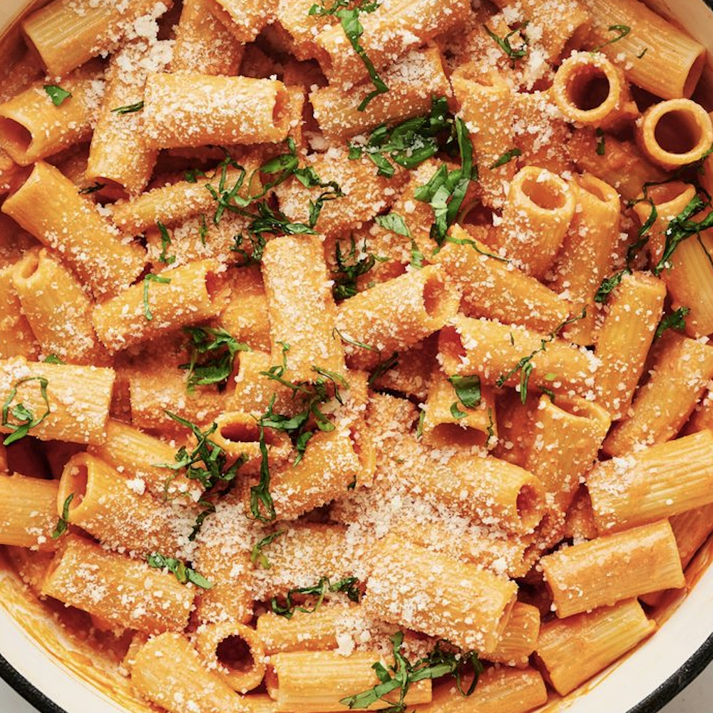

Pasta alla Vodka

Ingredients:
- 1 pound (450g) penne pasta
- 2 tablespoons olive oil
- 1 small onion, finely chopped
- 2–3 cloves garlic, minced
- 1/2 teaspoon crushed red pepper flakes (optional)
- 1 (28-ounce) can crushed tomatoes
- 1/4 cup vodka
- 3/4 cup heavy cream
- 1/2 cup grated Parmesan cheese, plus more for serving
- Salt and black pepper, to taste
- Fresh basil, for garnish
Instructions:
- Cook penne in salted water until al dente. Reserve 1 cup pasta water, then drain.
- Sauté onion in olive oil until soft. Add garlic and red pepper flakes, cook 1 minute.
- Add crushed tomatoes and simmer 8–10 minutes.
- Stir in vodka and cook 2–3 minutes. Add cream and simmer until smooth.
- Mix in Parmesan, salt, and pepper. Toss pasta with sauce, adding pasta water if needed.
- Serve with fresh basil and extra Parmesan.